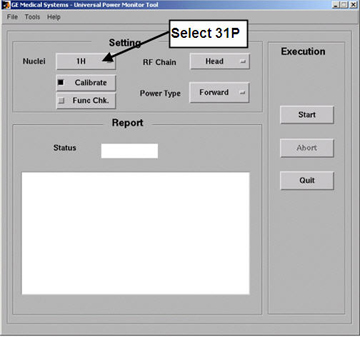

Restricted Service tools available to GE Field Service. Make sure your service key is installed. Select [Calibration Wizard] from the Calibration menu and then select [Click here to start this tool]. Once the Calibration Wizard starts, select [UPM Calibration (Head and Body)] from the menu, review and validate the pre- and post-dependencies. Select [Click here to start this tool] to start the procedure. If you are unable to start the Restricted Service tools, use the non-proprietary method described in the next bullet.
To start non-proprietary service tools: From the Common Service Desktop, select [Calibration], [UPM Tool] from the Calibration Menu, then select [Click here to start this tool] to start the procedure.
Illustration 3 shows an example of the UPM tool's user interface.
Illustration 3: UPM Monitor Tool User Interface
